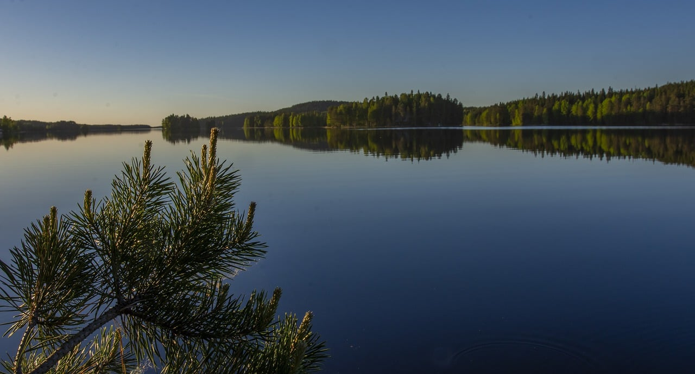

Pieni-Helvetti on saari Kuopion Kallavedellä. Pieni-Helvetti sijaitsee Hiidensaaren vieressä, n. 13 kilometrin päässä Kuopion keskustasta
Kun ottaa huomioon sen, kuinka tästä nimestä lähinnä tulee mieleen sen olevan harjoittelua jossain sijaitsevaa Isoa-Helvettiä varten, voi tämän Kallaveden järvessä sijaitsevan saaren 1°C keskilämpötila yllättää monet!
